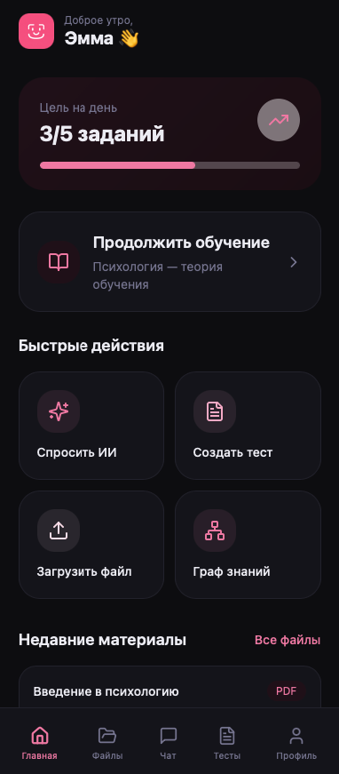
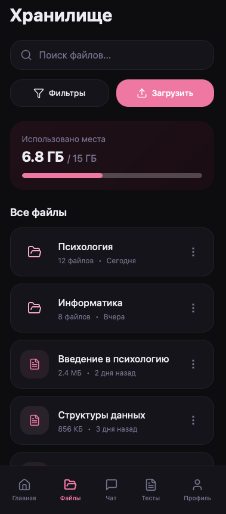
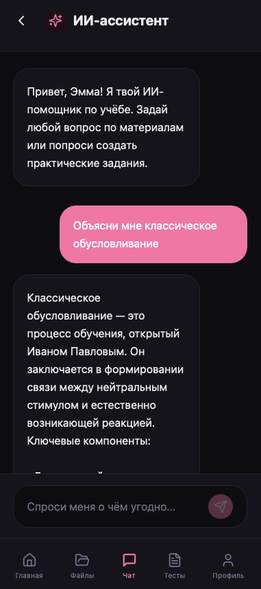
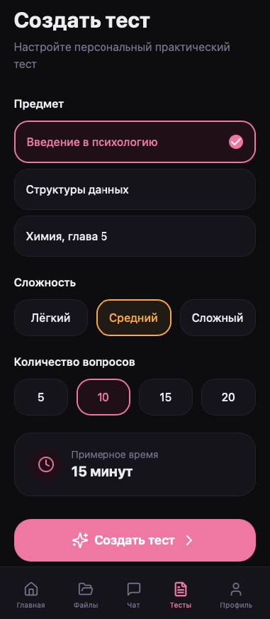
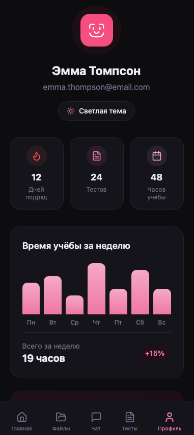

Материалы разбросаны
PDF, записи, ссылки и конспекты живут в разных местах.
ИИ-помощник по твоим материалам
Загружай лекции, конспекты и файлы. StudyBuddy превращает их в единое учебное пространство: отвечает с цитатами, генерирует тесты и показывает, какие темы стоит подтянуть.

Ответ по лекциям с источниками
Слабые темы и прогресс
Главная боль
Материалы разбросаны по чатам, папкам и ссылкам. Непонятно, с чего начать, как связаны темы и что уже забыто.
PDF, записи, ссылки и конспекты живут в разных местах.
Темы трудно связать между собой без общей картины.
Перед экзаменом сложно выбрать первый маленький шаг.
Без повторения и проверки знания быстро проседают.
Неясно, где ошибки и какие темы требуют внимания.


Решение
Это личный ИИ-эксперт по загруженным лекциям, конспектам и файлам. Он структурирует материалы, связывает темы, проверяет знания и дает понятную обратную связь по прогрессу.
Как работает
PDF и TXT попадают в базу, разбиваются на смысловые фрагменты.
RAG находит релевантные куски, а LLM формирует ответ.
Сервис генерирует тест и показывает статистику попыток.
StudyBuddy замечает слабые темы и подстраивает следующие вопросы.
Ключевые функции
Собирай PDF, TXT, лекции и конспекты в одном учебном хранилище.
Задавай вопросы по своим источникам, а не по абстрактной базе знаний.
Проверяй достоверность: под ответом видны фрагменты из файла.
Одно нажатие - и появляется интерактивная проверка знаний.
Сервис выделяет проседающие темы и объясняет, куда двигаться дальше.
Короткие повторения вписываются в расписание и поддерживают привычку.
MVP и roadmap
Минимально жизнеспособный продукт закрывает путь от загрузки материалов до ответа, цитаты и тестирования.
Интерактивные экраны, база пользователей, файлы и чанки.
Смысловой поиск, ответ с контекстом и ссылками на источники.
Диалог, карточки источников, генерация вопросов, XP и история.
Поиск, темы, экспорт, уведомления и мобильный релиз.


Микро-опрос
Ответ сохранится локально в браузере. Сейчас это быстрый прототип без серверной части.
Ранний доступ
Напишем, когда будет готов первый прототип с загрузкой файлов, чатом и тестами по материалам.
Для связи: @prosto_m0h